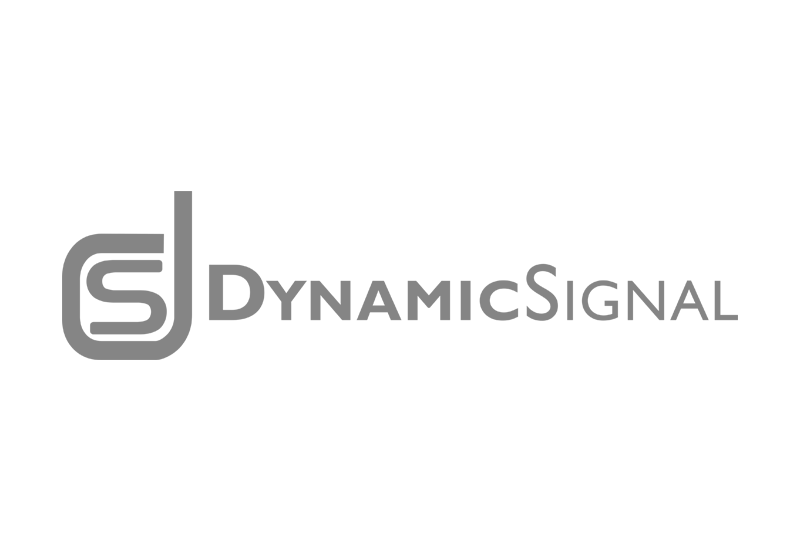

Our entrepreneurs create the future
Microsoft Ventures is an active, strategic partner at key stages of a startup's growth, typically investing between Series A and D.
Our focus areas
Artificial Intelligence
Investing in AI companies focused on inclusive growth and positive impact on society.
Big Data & Analytics
Harnessing the power of data to extract maximum insight.
Business SaaS
Boosting the reach of business by letting apps be everywhere.
Cloud Infrastructure
Driving the trillion-dollar migration to the cloud, led by Azure.
Machine Learning
Unleashing the power of the intelligent cloud.
Productivity & Communications
Extending Office 365 to empower every person and organization on the planet.
Security
Driving faster, stronger, more agile threat detection and response.
Locations served
-
NY
New York,
New York
11 Times Square,
New York, NY, 10036 -
SF
San Francisco,
California
1355 Market St.,
Suite 300,
San Francisco, CA, 94103 -
SEA
Seattle,
Washington
320 Westlake Avenue North, Suite 400,
Seattle, WA 98109 -
TLV
Tel Aviv,
Israel
13 Shenkar St., Gav-Yam, Building No. 5, Herzliya 4672513, Israel
“As the rapid growth of Dynamic Signal continues to change the way companies communicate with employees, it became clear that Microsoft Ventures was a perfect partner, offering an expertise in global enterprise solutions that is strategically aligned with our own growing international presence.”
Russ Fradin, Co-Founder & CEO of Dynamic Signal 
Tact Secures $15M Series B
Tact, the sales experience platform, announced the close of a new $15 million funding round in which Microsoft Ventures is proud to be participating. Led by former Salesforce and Siebel executive Chuck Ganapathi, Tact is on a mission to make enterprise software more human-friendly. Tact’s total funding now exceeds $30 million
Read MoreAre you looking for Microsoft Accelerator?
The new Microsoft Ventures focuses on start-up investments while Microsoft Accelerator focuses on start-up enablement, primarily through our seven accelerators around the world.